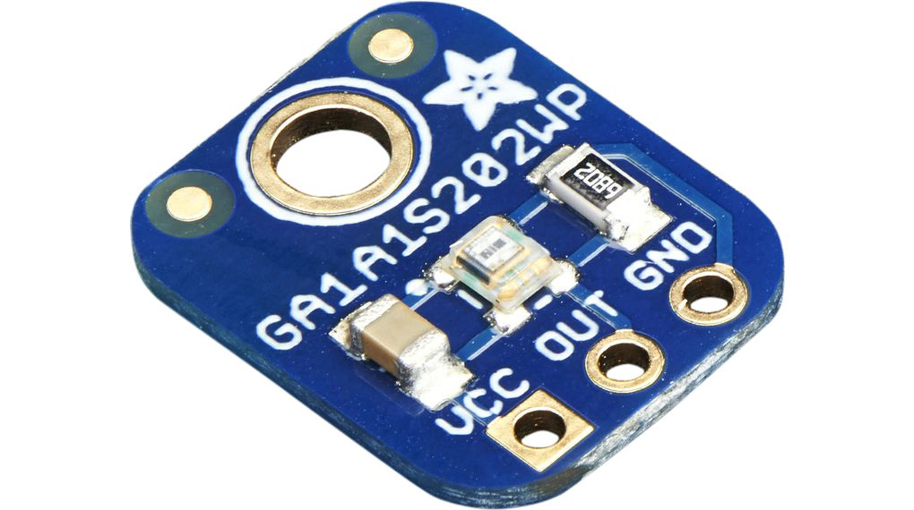

présentation APP Showroom
| Groupe | Domaine | Compétences | Capteur | Image capteur |
|---|---|---|---|---|
| Canapé | Programmation micro:bit, programmation node-red, traitement de données, MQTT | Interaction capteur | RPI3 et de micro:bit |  |
| LIDAR | C ou Python, liaison série, traitement d'image, algorithmes SLAM | Instrumentation/calibrage, connectique | RPLIDAR A1M8 |  |
| Vibration | Electronique de conditionnement de capteurs, traitement du signal | Algo d'apprentissage | ADXL354BZ | |
| Lumière | Traitement du signal, analyse de données, langage C, micro-controleur XIAO (utilisé dans la plinthe connectée) optionnellement BLE pour la communication | Node Red | PIR Panasonic EKMC260511 et GA1A12S202 |  |
Polytech Annecy-Chambéry - APP - Base de données et Technologies web